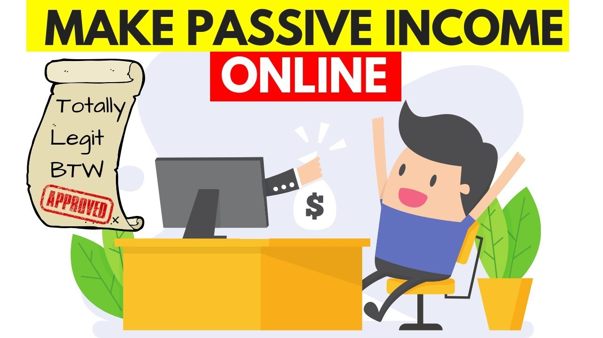

Passive Income Ideas: 35 Strategies to Boost Your Income In 2020
 Table of Contents What Is Passive Income? How Much Passive Income Can You Earn? Finding Passive Income Ideas with This List High-Yield Checking & Savings Accounts Passive Income Ideas for Investing Investing Performance Tracking and Analysis Passive Income Ideas with Real Estate Online Businesses Generate Passive Income Stuff You Already Do Passive Income Ideas for Renting Your Stuff Buy a Small Business Earn Passive Income from Lending Money Brick and Mortar Businesses Achieve Financial Independence Quicker Courses Popular New Podcast Toolbox Community Investable About Us Advertise Invest in Rental PropertyPassive Income Ideas: 35 Strategies to Boost Your Income This Year
By Andrew Fiebert Updated on November 30, 2020 Updated on November 30, 2020 Listen Money Matters is reader-supported. When you buy through links on our site, we may earn an affiliate commission. How we make money. Table of Contents Passive Income Ideas: 35 Strategies to Boost Your Income This Year What Is Passive Income? How Much Passive Income Can You Earn? Finding Passive Income Ideas with This List High-Yield Checking & Savings Accounts Passive Income Ideas for Investing Investing Performance Tracking and Analysis Passive Income Ideas with Real Estate Online Businesses Generate Passive Income Stuff You Already Do Passive Income Ideas for Renting Your Stuff Buy a Small Business Earn Passive Income from Lending Money Brick and Mortar Businesses Achieve Financial Independence QuickerMany people imagine life after passive income as laying on a beach all day without a care in the world. It’s not. Earning passive income means creating more time to pursue fulfilling ventures. This post details 35 passive income ideas to bring you closer to financial independence. Simply put, if you want to generate multiple income streams and escape the 9-5, this post is for you.
There is a lot of chatter in the personal finance world about passive income, why you need it, and how great it is. But what is it, and why is it such a topic of conversation? And what’s a good passive income idea?
Editor's Note
What Is Passive Income?
Passive income is when you continue to get paid for work, long after it is done. It includes royalties from books, movies, or songs. It’s also revenue that comes from real estate investments or business investments where you don’t have to be present to earn it.
Some passive income ideas take a degree of upfront work to earn, like writing an ebook, and some don’t take any effort at all, such as investing with a robo advisor.
Pursuing some of your passive income ideas can also speed your path to financial freedom .
How Much Passive Income Can You Earn?
If you read a few stories about passive income ideas, you might be under the impression that you can start a blog or write an ebook, and two weeks later, you will be raking in $20,000 a week.
Sorry, it doesn’t usually work that way. Creating multiple income sources is not a short-term strategy.
While some people make a great living from one form of passive income, it’s more common that you will have small amounts from a few different sources coming in .
Choose a few things that sound interesting to you and try them out. Try to choose a few that do require some work as an e-commerce site and some that don’t like buying dividend-yielding stocks .
Something will emerge that either you enjoy the most or is making the most money . Focus on that thing. Put some time and effort into it.
We all hear stories about blogs making thousands of dollars a month, but what we don’t know is how much time and effort went into that blog before it was able to break even, never mind make money.
Want to grow your income with Rental Properties?Our proven, data-driven approach to building a portfolio of income-producing rental properties that perform in the long-term.
Get the Course Learn MoreFinding Passive Income Ideas with This List
Each suggestion is ranked by how much effort you need to put in upfront before you might start seeing some money come in. A score of one takes the least effort, while a score of five requires the most.
Usually, just one of these is not going to be the million-dollar answer. You should try out some of the low effort passive income ideas and one or two of the higher effort ones and see which work best for you.
High-Yield Checking & Savings Accounts
Online Checking and Savings Accounts: Effort 1
This one is a quick and easy win. Plenty of online savings and checking accounts are available to people who want a little more bang for their buck.
Betterment Cash ReserveThis is a no-fee, high-yield savings account designed for the money you save every day. At 0.40%, their interest rate is 8X the national average. And since it tracks the Fed Funds rate, it stays that way.
Get started Our ReviewIf you’re looking for a low-risk, high interest-earning cash account, Betterment Cash Reserve , offers a competitive APY. Grow your rainy-day fund with no fees.
Schwab and Ally are two other high-quality companies offering competitive rates.
Passive Income Ideas for Investing
Investing in the stock market is the ultimate and most accessible form of passive income. You can undoubtedly devote lots of time to researching companies and markets, but you don’t have to do that to invest.
High-Yield Investment Portfolios: Effort 1
These portfolios make heavy use of Vanguard and it isn’t by accident. Vanguard is the leading low-cost index fund provider they also invented the category. If you want to build your own portfolio, these are what we think are the best vanguard funds . We also did an episode on what Vanguard is all about .
Golden Butterfly PortfolioThis portfolio is a modified version of the Permanent Portfolio with one additional asset class. This is done to incorporate some of the characteristics of a few other notable lazy portfolios.
Invest in this portfolio Learn MoreThe Golden Butterfly is a high-performance improvement to the All-Weather Portfolio by Ray Dalio.
While Dalio is agnostic about the stock market, the Golden Butterfly skews toward prosperity. And for a good reason. Over time, there have been more times of economic growth than times of decline and recession.
Swensen PortfolioA contrarian investment approach that promotes a well-diversified, equity-oriented portfolio that rewards investors who exhibit the courage to stay the course. Swensen, creator of this portfolio is the mastermind behind the Yale Endowment investment strategy.
Invest in this portfolio Learn MoreThe Swensen Portfolio’s overall investment strategy is limiting risk by diversifying between asset classes that do well in opposing times.
During a bull market, US and international stocks will do well. During a bear market, treasury bonds and TIPs will likely outperform (along with the bond market as a whole).
BettermentA completely automated investing tool that's perfect for beginners and hands-off style investors. They use advanced strategies to earn you a higher investment return than you could on your own.
Start Investing Our ReviewBetterment has been our hands-off suggestion for years. There is no minimum to invest, the fees are low, between 0.25-0.40%, and you don’t have to know anything about money or investing to get started.
They offer automatic rebalancing and tax-loss harvesting . To make things even easier, you can set up automatic deposits from your checking or savings account into your Betterment account.
Acorns Invest spare change automatically from everyday purchases into a diversified portfolio. Choose from three options and Acorns will handle the rest. Fund your personal investment account or retirement account in a few easy steps. Open Your Account Learn MoreAcorns is a great way to start investing and building wealth. As it turns out, Acorns will pay you $5 to start investing with them for as little as $1.
That’s a 500% return, plus it’s probably time you started investing in your future. They even have features like round-up and found money that allows you to get free money from places you already shop.
We’ve also created a comparison between Betterment, Acorns and other popular robo advisors .
Investing Performance Tracking and Analysis
Personal CapitalBudget like a business and focus on your cash flow. In addition to their budgeting software, they have an awesome suite of tools to help you optimize your investments . Did we mention it's free?
Plan Your Future Our ReviewIf you’re pursuing a market-focused strategy for building passive income, you need to be able to measure and manage it all effectively. Personal Capital allows you to track your investments and help you to monitor your budget. And the more information you have, the smarter your investment decisions will be.
You can use Personal Capital to track the performance of your investments across all of your accounts.
They also have a 401k fee analyzer . We’ve talked in the past about how even seemingly small fees can eat into your retirement accounts. As low as 1% can eat up a whopping 28% of your returns over 37 years!
The tool will show the impact of fees on your 401k over time. Armed with that information, you can move your money to an account with lower fees, like Vanguard, which charges just 0.30% and has a record of excellent performance.
We did a full review of Personal Capital and a review of their 401k fee analyzer because we feel it’s so important.
BlooomBlooom is a service that takes the guess work out of managing your 401K, 403b or TSP. They will optimize your investments automatically, reduce your fees and provide open-ended fiduciary grade advice. Use this link and get a free analysis. If you become a member, your first month is free.
Optimize your retirement accounts Learn MoreBlooom is like Betterment but for your 401k, 403b or TSP. Chances are the funds in your account are loaded with fees, and that should scare you because even 1% in fees can eat 25% of your returns over 30 years.
Not only will they slash your fees, so you keep more for retirement; they’ll also rebalance your portfolio based on your age and provide open-ended fiduciary grade advice.
They will give your retirement accounts a free analysis, so if you’re a DIY type, you can simply take their advice and implement it yourself, for free.
Dividend-Paying Stocks : Effort 1
When you own stock in a company directly or through a fund, you may receive dividends . A dividend is a distribution of a portion of a company’s profits.
They are decided by the board of directors and can be issued as cash payments, like shares of stock or other property. It’s an opportunity for a company to reward shareholder loyalty.
The amount you receive depends on how much stock you own and how much profit there was to divide.
Investors, mainly retired investors, like the steady income that dividend stocks provide and also like the option of reinvesting dividends to buy more shares of stock.
Dividend Aristocrats PortfolioThis is an index fund of the most consistent dividend-paying companies in the S&P 500. It has historically outperformed the S&P 500 long-term. Over the past 10 years, it has returned 10.98% on an average annual basis whereas the S&P 500 only returned 10.53% during that same period.
Invest in this portfolio Learn MoreIf you’re looking for cash flow, look no further then the Dividend Aristocrat portfolio. To be eligible for the S&P 500 Dividend Aristocrat index, a stock must have:
Increased its dividend payouts for a minimum of 25 consecutive years, Currently be part of the S&P 500 index Have a minimum market capitalization of $3 billion.You can pick your own dividend stocks using M1 Finance , which is free to use. Set the search criteria for the P/E Ratio and Dividend yield (shown as a percentage).
You can set minimum and maximum values; in the dividend yield box, set it between 2 and 100. It will search for stocks that pay dividends worth between 2-100% of the current stock price.
For the P/E box, set the values between 0-18. It will show stocks with a current price between 0 and 18 times more than the company earns in a year.
After you set the criteria, you will see a table showing the details of stocks that fall into it. You can click on Div yield (%) to sort by highest dividend yield. Now you have a good working list.
The S&P 500 has a fund called The S&P 500 Aristocrat Fund that has over the last five years had returns of 17.56%.
Passive Income Ideas with Real Estate
Real estate is one of the best passive income strategies. It has an important place in the world of passive income, but a lot of people only think of it regarding rental property , and that is out of reach for many.
But the truth is, you can start investing in real estate with as little as $500.
Rental Income: Effort 3-5
The difficulty level depends on how involved you want to be. If you’re going to be a hands-on landlord and take care of everything from finding a tenant to fixing a clogged sink or flip houses that is a 5.
But there are many more laissez-faire options.
In fact, I created a course that focuses exclusively on that laissez-faire strategy: Rental Properties for Passive Investors.
You’ll learn my criteria for finding (and closing) the right property, the foundations of a successful rental business, the advantages of shielding your assets with an LLC , and much more.
Rental Properties for Passive InvestorsOur proven, data-driven approach to building a portfolio of income-producing rental properties that perform in the long-term.
Get the Course Learn MoreCrowdfunded Real Estate: Effort 2
Real estate investing used to be seen as the preserve of the wealthy, but crowdfunded real estate sites want to bring it to the public at large.
PeerStreet Invest in high-quality, residential and commercial real estate loans for as low as $1,000. Debt is viewed as the less-risky asset class and with PeerStreet's short terms, your exposure to interest-rate fluctuations is significantly reduced. Build Your Portfolio Learn MorePeerStreet is a marketplace to invest in high quality private real estate loans . The minimum investment is just $1,000, but you must be an accredited investor.
You can set parameters to customize your investment. Investments made with Peer Street are a real estate loan and not an investment in the actual real estate.
REITs: Effort 1
A REIT is a real estate investment trust. It’s a company that owns or produces income-producing real estate.
Think of a REIT as a mutual fund for real estate investing. You can invest in real estate the same way you can invest in any other industry, by buying stock.
When you own stock in a REIT, you earn a share of the profit produced by that real estate investment. It’s a way to invest in real estate without the hassle of being a property owner.
FundriseDiversify into income-producing real estate without the dramatics of actual tenants. Currently, their return is more than 2x that of the Vanguard REIT Index Fund.
Invest in Real Estate Our ReviewFundrise allows individuals to invest in commercial real estate online through an eREIT. Their crowdsourcing model sets them apart from a traditional REIT allowing the average investor to participate in deals for as little as $500 with lower fees than typical open market REITs.
Online Businesses Generate Passive Income
Start a Blog: Effort 3
We wrote this article to make money, and the way to do that is by providing value to your readers, which drives traffic to your site and then monetizing it with affiliate links.
Learn How to Start a Blog That Earns over $400k a year
Remember, the more niche your website and topics are, the better. When you’re building residual income , the less competition, the better.
If we go back to our discus aquarium example, you can provide value by writing updated information. The number 2 result on Google is three years old.
You can make affiliate marketing income by linking to Amazon to all of the products you write about on the site.
Part of providing value is building trust. Don’t link to things that aren’t of good quality, or people won’t trust your recommendations.
The other part of making an audience is consistency. It matters less how often you post than how consistently. If you only have time to do one post a month, that post should come out on the same date and time each month.
An excellent way to stay consistent is to write several posts before you release the blog. That means if life gets in the way, and you don’t have time, you have a backlog of material you can consistently publish.
We highly recommend starting with HostGator since you can get started for $2.75, so the risk is extremely minimal.
HostGatorWhen it comes to finding the highest quality host for the lowest price, HostGator wins hands down. Depending on the day, it's between $2.75 and $3.95/month for the tier you need.
Affordable Web Hosting Learn MoreHow to monetize: affiliate marketing works well when you discuss products on your blog.
For our fish tank blog experiment, we would link to all the things you need to buy for an aquarium, and then when people click on that link and buy that item (and other items they purchase with it with some exceptions), you get a percentage of the purchase.
Amazon Associates is the best-known affiliate marketing program, but there are others like Impact Radius , ShareASale , Commission Junction , ClickBank , and Rakuten too.
Google Adsense pays to post ads on your blog. There are two ways to make money with Adsense; impressions which give you cash for every 1,000 page views and clicks which provide you with money when a visitor to your site clicks on a displayed ad.
You can sell the information to your readers. If you write a travel site, for example, you could write a series of city guides and charge people to download them.
You can design courses and charge for access to those. Plenty of bloggers sell classes on how to make money blogging.
There are numerous ways to earn money online, but monetizing your site with the above ideas are some of the best.
Create Digital Products: Effort 5
One of the most common ways people make money on their websites is by selling courses. We sell a few ourselves. For example, this is our budgeting course:
Mastering MintThis is our guide to budgeting simply and effectively. We walk you through exactly how to use Mint, what your budget should be, and how to monitor your spending automatically.
Get the Course Learn MoreYou also even create an app or service which, is decidedly harder than making a course but the income potential here is far larger. We’ve also done this ourselves, these are our two SaaS products:
LassoWe built this to monetize Listen Money Matters and now we're sharing it with you. If you want to make money online, you need this tool. It's the best plugin you'll ever use, if we do say so ourselves.
Monetize Your Website How We Make Money InvestableUse our tool to find out if you're getting a good deal. Know beforehand what your costs look like and whether your investment will generate cash flow. Just enter an address and it does the math for you. Don't guess the value of your investment, calculate it.
Get A Data-Driven Property Analysis Our CourseAll of those apps you’ve downloaded on your smartphone or laptop were created by someone. I even built a plugin to manage all of my affiliate links in a WordPress dashboard.
If you have a winning idea that fills a need or solves a problem, find a programmer or learn to do it yourself.
Building digital products take a bit of work, but once the work is done, you can sell it forever (as long as it’s relevant).
Alexa Skills: Effort 4
Much like building an app, you can learn to create Alexa skills. Skills are voice-driven capabilities installed into Amazon’s Alexa. Places like CodeAcademy provide courses to learn how to do it.
You’re able to publish your own program and earn Alexa Developer rewards in multiple categories, from lifestyle to games to health and fitness. Amazon monetizes skills based on customer engagement, and you can earn on a monthly basis.
Sell Stock Photos: Effort 2
If you love taking pictures, why not sell them online? This may not ever replace your day job, but if you’ve got a knack for it, you can earn hundreds of extra dollars per month.
How much you earn depends on how large your portfolio is, experience level, and the number of stock photo agencies you work with.
Like with investing, diversification is key. The more photos you have spread across agencies, the better your chances of earning passive income.
Sites like 500px, Shutterstock, iStock, and Adobe Stock are well-known places to start.
Sell Your Music: Effort 3
Similar to selling stock photos, you can sell your music (or jingles and sound effects) online too. It’s another numbers game. You most likely won’t make very much in the beginning.
However, as you build your portfolio and audience over time (and get featured on more streaming services) , there’s potential for a generous passive income stream.
Epidemic Sound works with artists to distribute their music across multiple platforms. They pay you an upfront rate and then split all streaming revenue 50/50.
Soundcloud lets you monetize uploaded tracks by paying you directly every month. Uploaded songs are instantly available to your audience for streaming.
Write a Guide or Online Course: Effort 3
The best vacation guide I had for any trip was not a book but a free site a friend recommended to me; Tom’s Guide to Paris.
Tom wasn’t a travel writer; he was an American ex-pat living in Paris and knew the city well. I would happily have paid for the guide he wrote for free.
If you know anything well, a place, how to fix something, how to make something, how to do something, you can write a guide for it.
You can sell your guide as an ebook, offer it as a download for a fee on your site or reach out to bloggers with similar content and ask if they will offer it as a paid download on their website (for a price of course).
If you are looking to make a course, Teachable is an excellent place to host it. They’ve done all the hard work of running the course website for you; all you need to do is make something awesome and share it with people.
Another great place to host a course is Udemy. They also have a built-in audience that could help in selling your course.
E-Commerce: Effort 2
The level of difficulty depends on what you’re selling. If you are making things yourself, it’s harder than re-selling already existing items.
Either way, E-commerce sites have made it easier than ever to make money selling items online.
ShopifyShopify is the all-in-one commerce platform to run your business. Market your shop, sell anywhere, and manage everything using their suite of tools and expert-level support team.
Start Your Online Business Learn MoreSelling stuff is a great way to make extra money, whether you sell things you make or re-sell items you buy. If you want to build an online store, Shopify makes it easy.
They have ready-made templates, so you don’t have to spend time designing your store.
They also have a lot of tools to help run your business. You can create coupons and promotions, process payments, and handle returns.
Even share your store on sites like eBay, Google Shopping, Facebook, and several price comparison sites like Nextag, Bizrate, and PriceGrabber.
Shopify is the platform of choice for drop shippers.
Online Arbitrage: Effort 3
Arbitrage is, “The simultaneous purchase and sale of an asset to profit from a difference in the price.” It’s a fancy way of saying, buy low, and sell high.
This type of selling isn’t simultaneous, but the definition still fits.
Amazon : Forty percent of Amazon sales come from third-party sellers merchandise stored in Amazon’s warehouses. Earn money from what’s already selling on Amazon.
It will show you what types of products are doing well.
Choose a category and then Best Sellers. Monitor best sellers for a few days or even a few weeks to help make your decision. Within those items, choose some things you have some familiarity with.
Some people find whole sellers and re-sell their products, but this method can tie up a lot of your money. Unless you find a relatively unknown one or negotiate an exclusive contract with them, there is too much competition to make it worthwhile.
Much better to trawl thrift shops, post-holiday clearance sales, and estate and garage sales, which can be terrific places to buy a lot of merchandise cheap. We wrote a detailed article on the process.
eBay : Some things sell better and for more on eBay than Amazon. If you have a “one of a kind” item, your grandmother’s antique lamp brought over from the old country, for example, eBay will be better.
They also accept some things that Amazon doesn’t sell, like used clothes, and some used baby items. eBay is even better for large pieces, like cars and furniture.
It’s more work to list things on eBay and more time consuming than selling on Amazon, though. We interviewed Jordan Malik about this.
Etsy: Geared towards handcrafted, one-of-a-kind creations, Etsy boasts millions of items sold by independent sellers. Some of the more popular items you can sell on the platform include art, clothing, jewelry, home decor, and collectibles.
Etsy also features a marketing platform where they’ll help you sell your wares. Use Etsy Ads to advertise products that show up in Etsy search results and Google. You’ll be able to track your stats with their Web Analytics.
YouTube Channel: Effort 5
We’re in YouTube’s golden years, growth is insane, and it’s still on the new side. There aren’t nearly as many videos as articles, so it’s easier to find an audience. Also, videos are much harder to make, which means less competition.
Right now, you can create tutorials, vlogs, how-tos, gaming videos, and much more. You can also create ads to sell on the platform.
Ebook: Effort 4
It’s another place to find a niche, and you’ll do better-writing non-fiction like a how-to or a book on some aspect of fitness or wellness.
It’s not the format to make a splash with your “great American novel.”
Ebooks don’t have to be long, so no need to write an opus to make some money. There are several places you can publish, including Amazon’s Kindle Direct Publishing, Booktango, and Lulu.
The essential services on most of the publishing sites are free, and you can pay for premium services like marketing and editing.
AudioBook: Effort 4
Doing an audiobook is more complicated than an ebook, but you’ve already done the work of the ebook, so why not get it out there in another format.
You don’t have to have all of the specialized equipment to do it yourself; outsource it to someone else on a site like Upwork or Guru.
You can use the AudioBook Creation Exchange to create and sell your audiobook.
Stuff You Already Do
Spending: Effort 1
Rewards and Points Cards : There is a ton of competition among credit cards, and one of the ways they try to entice new customers is a sign-up bonus.
Some cards will give you as much as $150 back in the form of statement credits when you spend a certain amount of money on the card within a set time frame.
Do not spend money you wouldn’t ordinarily spend to get the bonus, or you aren’t making money.
Cash Back Cards : Cashback cards give you a small percentage back for every dollar you charge to the card.
Some give back on only specific categories like groceries or gas, and some offer cashback on all purchases.
Eating Out: Effort 1
SeatedIt would help if you used Seated when dining out. Every time you complete a reservation (book ahead or walk-in), you get up to 30% back. Use your rewards on in-person experiences or redeem for gift cards with brands including Amazon, Uber, and Target. Laura and I almost exclusively eat out with Seated because it saves us so much.
Book A Reservation Learn MoreSeated is probably the best thing on this list. It sounds too good to be true, but I know it works because my wife Laura and I both use it.
It’s an App that you use to book restaurant reservations. Every time you complete one, you get a gift code for $20-$50 for Amazon, Uber, or Starbucks. Amazing!
The rewards are available within 24 hours of your completed reservation. We exclusively use this to eat out as it often reduces the bill by 10-20% for us.
Shopping: Effort 1
Earny : When you shop online, you should be comparing prices and looking for the best deal. It’s so easy to compare prices using Google Shop that there is no excuse not to.
But even if you do your research and buy something at the lowest price, that might only be the lowest price at that moment.
If you buy something and the price goes down within a specific time frame, Earny works to get a refund of the difference.
Ebates : This is a site that gives you cashback when you shop online. It’s not a shopping portal but an affiliate of more than 2,000 stores, including Amazon, Macy’s, and Bed Bath and Beyond.
Each store shows what percentage cashback you get when you shop with them.
Your money is paid out four times a year to your Pay Pal account or sent by check.
Swagbucks : When you join Swagbucks, you can get cashback when you buy online from more than 1,500 retailers, including places you probably already shop like Amazon, Target, and Starbucks.
You earn points for each dollar you spend and also get private coupons and deals exclusive to Swagbucks shoppers.
Also, you can earn points when you use the Swagbucks Yahoo search engine, and when you watch exclusive videos, Swagbucks has put together.
You can redeem your points for gift cards or get cash back through PayPal.
Passive Income Ideas for Renting Your Stuff
You can earn passive income by renting out lots of things.
Rent a Room: Effort 2
A lot of places are cracking down on renting out an entire house or apartment, but there aren’t restrictions on renting out a room in your home. You can do this on sites like Airbnb if you don’t want a full-time roommate or Roommate Finder if you do.
Rent Your House: Effort 3
Airbnb: If you live in a desirable place, a big city, a charming hamlet, the chances are that someone would like to stay in your home for a few days. And they’ll pay you!
Airbnb connects those with space to rent to those looking for a place to stay. We wrote an article on the process.
Rent Like a Champion: Do you live near a college campus, famous golf course, race track, or other venues where they hold major sporting events? You can rent your home out to people attending those events through Rent Like a Champion.
You set the price and availability of your rental. Most rentals are from Friday evening to Sunday afternoon, and the site says the average host earns $1,200 per weekend.
The company provides up to $1,000,000 in insurance coverage, which acts as your primary insurance policy for renting out your home.
The policy covers liability, structural damage, and damage to items and property. You are paid via direct deposit 5-6 business days after the guests check out. The site currently has listings in 100 towns nationwide.
Rent Your Stuff: Effort 2
Peer Renters: Are you one of those people who decides to start a new hobby, buy all the stuff you need to partake in that pastime, do it once, and then realize you hate it, and now you’re stuck with all this expensive stuff?
Or maybe you do use your stuff, but you probably aren’t using it all the time. You can rent out things like your camping gear, sports equipment, camera equipment, and tons of other stuff to people who had more sense than you and didn’t buy them at Peer Renters.
Rent Your Car: Effort 2
Depending on where you live, renting your car can potentially earn you upwards of $10,000 annually, according to some of these companies’ websites.
Turo: You can create a free listing on Turo’s site, upload a few vehicle photos, and start earning. You’ll get a notification when someone books your car, which you can accept or decline. Your vehicle is covered up to $1 million in liability insurance.
HyreCar is an online carsharing marketplace that connects you with rideshare drivers (e.g., Uber or Lyft ). Your renters are people who either don’t own a car or don’t want to use theirs for ridesharing. HyreCar also works with potential drivers for DoorDash and Instacart.
Getaround lists your car and then connects you to potential renters in your area with the Getaround app. You can instantly book and unlock your car from your phone with keyless entry.
Be mindful of what each company charges for using its service. For example, Getaround charges a $99 one-time set-up fee and a $20 monthly subscription fee to cover data network access for the Connect installed in your car.
Check the company’s terms of service page for details.
Rent Your Parking Space: Effort 2
Pavemint lets you rent both business and residential unused parking spaces. The app features a pricing algorithm based on the local meter and lot rates, parking supply, and walkability to determine what your space is worth.
If your space has an EV charger or enhanced security (either cameras or attendants), it could increase your earnings.
Spot Hero is an online marketplace connecting drivers looking for a parking spot. Get paid monthly by either check or deposit.
CurbFlip is another parking space marketplace that rents available spots to drivers. If you live near an airport, concert venue, sports venue, or want to rent your driveway, CurbFlip is also worth a look.
Storage Facility: Effort 3
If there is one thing Americans have a lot of, it’s crap in their houses, garages, and sheds. And even that isn’t enough room for all the stuff we buy, so we need more storage space.
There is almost no maintenance for storage units, and they don’t require the same level of management as a rental property.
The units are self-serve. People let themselves in and out of their units. If they don’t pay the rent, the stuff is sold off, and the unit rented to someone else. You can peruse storage facilities for sale at LoopNet.
If you don’t have the money to buy or build a facility, you can invest in a REIT that specializes in them, like Public Storage or ExtraSpace Storage Inc .
Buy a Small Business
Americans spend an average of five hours watching TV every day. Use a few of those hours to make some money while you’re at it.
Buy a Blog: Effort 3
FlippaA marketplace to buy and sell online businesses. With over 1.5 million registered users, Flippa is the biggest of its kind.
Own Your Future Learn MoreYou can also buy an existing blog that is already making money. People sell successful blogs for all sorts of reasons; they’re tired of doing it, they no longer have time to do it, it’s not making enough money, or your offer was too good to refuse.
It takes some research to find a blog worth buying, though, kind of like choosing the right rental property. Some minimum criteria should be met before you delve further.
The blog should be at least 12 months old and get at least 10,000 visits a month with at least half those coming from search engines (meaning the site’s SEO is pretty good), and it should be under-monetized, meaning the current owner isn’t fully exploiting the potential.
You can then choose to take over the blog yourself or make an offer to keep the founder on as a writer and perhaps the face of the blog, too, while you collect the income generated.
You can peruse sites for sale at Flippa, and some can be had for just a few dollars.
Buy an Existing Business: Effort 3
The barrier to buying an online business is much lower than purchasing a brick and mortar business. They can be had much more cheaply, and there aren’t a lot of physical assets to deal with, and there isn’t much overhead.
You can find online businesses for sale on sites like BizBuySell.
Buy Royalties: Effort 2
I had no idea this was a thing! Music ownership is managed via royalties. Having ownership of those rights means the holder earns money on the earnings of that music.
Royalty rights are not affected by financial markets and provide a steady stream of passive income. You can bid on royalties on the site Royalty Exchange.
Buy and Sell Domain Names: Effort 3
Internet domain names can be valuable! That’s why famous people rush to trademark their children’s names because if someone is going to pimp out a baby, it’s going to be Beyonce and Jay Z, not some internet nerd.
There is some luck involved in choosing a good domain name to buy, but there are also ways to research what might be a good one.
You want to look for hot keywords and buy a name that, in the future, a business would want to buy. You can purchase domain names at Flippa. We interviewed Adam Dicker about this process.
Earn Passive Income from Lending Money
Peer to Peer Lending: Effort 2
Banks don’t lend money out of the kindness of their hearts. They do it because it’s profitable. You can get in on some of that action through peer to peer lending.
Peer to peer lending matches those who need to borrow money with those who have money to lend.
The benefit for the borrowers is that they often don’t qualify for traditional loans from banks or credit unions. For the lenders, the interest they get on the loans can be higher than that of more conventional investments, sometimes averaging above 10%.
Lending Club : Lending Club brokers deals for amortized loans and these types of loans favor lenders because they receive a higher portion of interest earlier in the loan, which means the lenders don’t care so much if the borrower pays the loan off early. I did a full review of Lending Club and shared my investment strategy.
Credible : It’s similar to Lending Club but has higher standards for borrowers. Borrowers must have a credit score of 640 or higher, and while there are no set requirements for income level, the average borrower makes $86,400.
Borrowers are “graded” based on things like credit score and debt-to-income ratio. The grade is what determines both the interest rate and the origination fee and is the criteria lenders look at when deciding whom to loan to.
Brick and Mortar Businesses
The right brick and mortar business can be a good investment, but there is more overhead and moving parts. Therefore much more research has to be done than you need to invest in an online business.
Laundromat: Effort 5
According to SpeedQueen , the average cash-on-cash ROI for laundromats is 20%-35%. And CoinLaundry.Org lists an annual cash flow of up to $300,000 annually.
People need to wash their clothes, but not all residential spaces come with washers and dryers. If you have the capital and wherewithal to run this business, it could make for a potentially lucrative investment.
Invest in things people need. Laundromats aren't sexy, but they turn a profit.
Tweet ThisYou’re overhead is significantly higher, with costs ranging from accounting to rent to maintenance, so it depends on how active you want to be (also matters if you’re able to turn a profit after covering all expenses).
Video Arcades: Effort 5
It’s a $3 billion industry in the U.S. with nearly 7,000 businesses. Another coin-based operation with lots of overhead, but cash flow can be high if in the right location. Why?
People will always enjoy playing arcades. Themes will vary. Some cater to adults and feature a full-service bar while others target families. What appeared to be a dying industry seems ripe for a rebound.
Vending Machines: Effort 4
While I wouldn’t call a vending machine, a brick and mortar business, many are found within them. The types of products you can sell vary:
Bulk Candy Snacks and Soda Toiletries Video rentals Electronics (e.g., wireless headsets and chargers)The barrier to entry is low, with startup costs as low as $150 per machine plus inventory. While owning one machine won’t be life-changing, a few strategically placed machines could net you a nice monthly profit.
Invest In an Existing Business: Effort 3
Starting or buying a business indeed isn’t passive, but you can invest in it as a silent partner. For some of us, this is harder than it sounds.
When you agree to become a silent partner, you have to stay silent. Hard to do when it’s your money on the line, and you think things should be done differently.
You can search sites like Angel Investors Network for additional revenue stream opportunities.
Achieve Financial Independence Quicker
Not all of us are going to get rich from our jobs. If we want to achieve a level of financial independence, we are going to have to start earning passive income.
This list should give you a few passive income ideas. Pick one and get started. But put some effort into it. We did a month-long series on starting an online business that will earn $1,000 a month within a year.
Front-load the work now so you’ll have a stream of passive income within a few years.
If you want even more information, check out Passive Income on Reddit and the Passive Income Wikipedia page .
Get our best strategies, tools, and support sent straight to your inbox.
Andrew Fiebert is a thirty-something father of twins, a self-professed data nerd, and has worked as a Data Engineer for Barclays Capital and iHeartRadio. He's spent the past six years growing this site into a multi-six-figure business with over 500 hours of free personal finance education that reaches over 1 million people every month. Andrew has a B.S. in Computer Science and has been featured in Quartz, Forbes, Business Insider, and The Telegraph.Read These Next
Money Can’t Buy Happiness But It Can Buy Financial Freedom
The Best Apps To Make Money Fast
There Are Few Things In Life As Beautiful As Residual Income
Get our best strategies, tools, and support sent straight to your inbox.
About Our Courses Community Investable LASSO Advertise How We Make Money Copyright © 2020 Listen Money Matters. All Rights Reserved.
Privacy Policy + Disclosure learn courses podcast popular toolbox